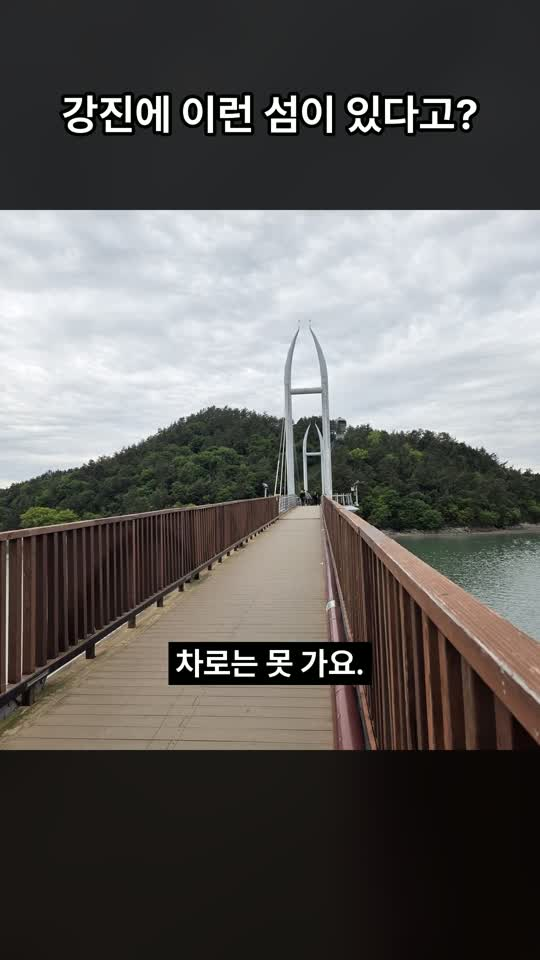

06 · 실행 방법
다섯 번 답하면 생기는 것
| 지점 | 보는 것 | 답 예시 |
|---|---|---|
| A | 사진 순서 · 표지 · 캡션 | 이대로 / 내가 고를게 |
| B | 영상 제목 · 대본 | 이대로 / 고칠 문장 |
| C | 블로그 제목 5개 | 2번 제목으로 이대로 |
| D | 세 채널 체크리스트 | 대표 승인 전부 |
| E | 올린 뒤 링크 | 링크 3개 한 번에 |
결과사진 폴더/work/C-001_장소/ · OUTPUTS.md에서 한 번에 열기

instagram/v1카드 · 캡션

youtube/v1shorts.mp4

tistory/v1preview.html